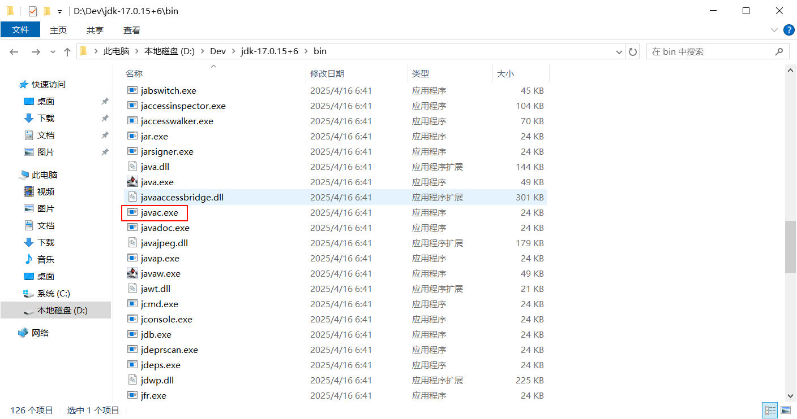
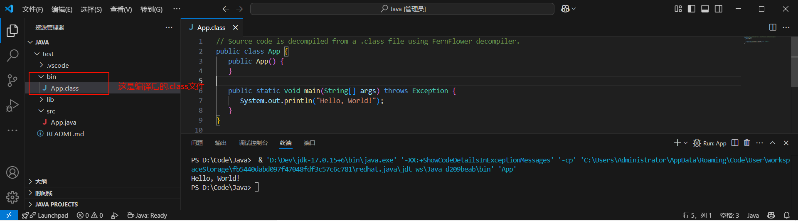
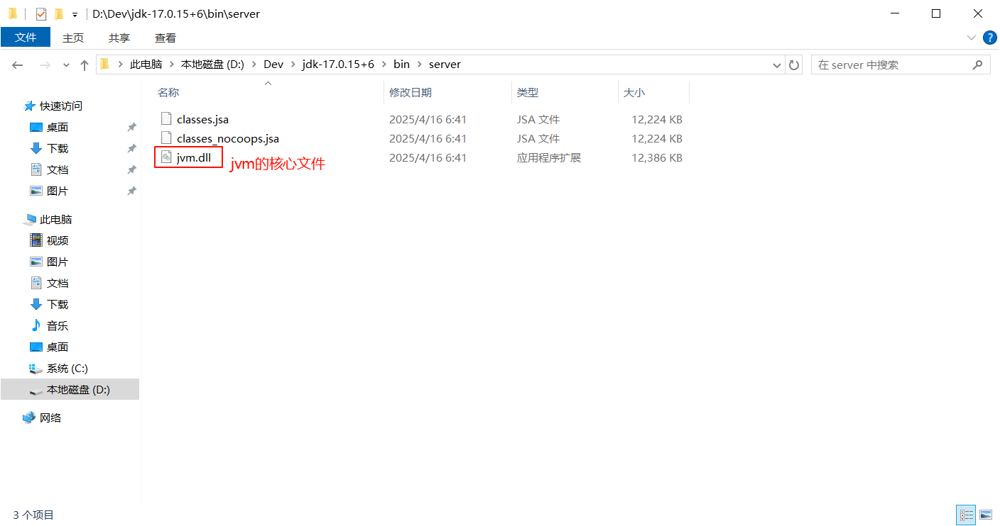
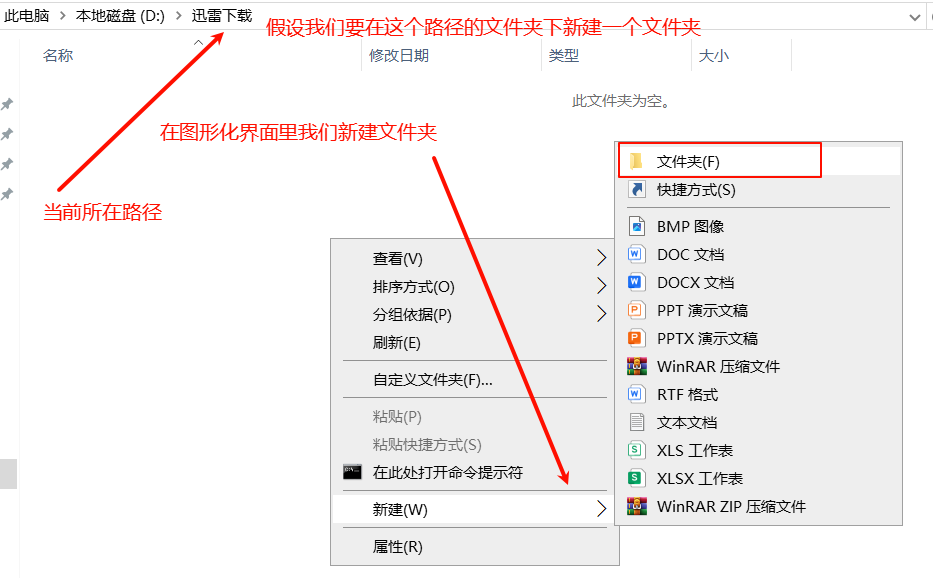
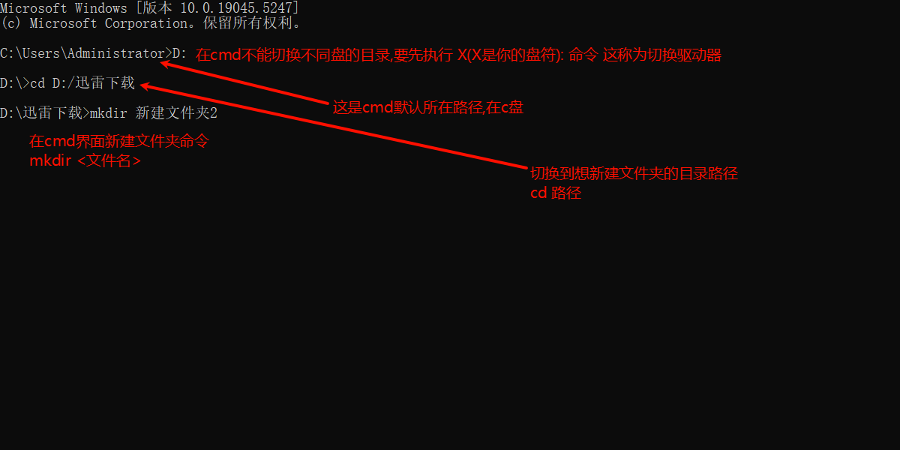
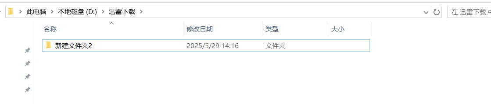

运行流程
下面的内容有些词听不懂没关系,只要明白是一些jdk文件夹里的程序在起作用即可.
当我们点击右上角的小三角后
VSCode检测Java环境
VSCode 会通过配置的 JDK 环境变量来确认 Java 开发环境是否可用。也就是vscode会优先从系统变量里找javahome(大小写无所谓)变量,但是我们并没有配置,先前只是配置path变量里的可执行文件路径而已,所以我们手动在vscode的设置里配置了javahome的路径.
如果环境变量配置有问题，VSCode 会提示你重新配置 JDK 路径。(也就是报错)
Java 扩展包的作用
Language Support for Java：这个扩展包会为 Java 文件提供语法高亮、代码补全、错误检查等功能。
Java Extension Pack：它是一个扩展包集合，通常包括调试工具、依赖管理工具(如 Maven 或 Gradle)等。
当你点击运行按钮时，这些扩展包会协同工作，确保代码能够正确编译和运行。
编译 Java 文件
VSCode 会调用 JDK 中的 javac.exe(Java 编译器) 来编译你的 .java 文件。

编译过程会检查代码的语法错误、类型错误等，并生成 .class 文件(字节码文件)，这是 Java 程序运行的基础。
.class文件在vscode默认是生成在项目根目录的bin文件夹下,其他编辑器位置可能不同.在项目的.vscode文件夹下有个settings.json文件,在这里为这个java项目做一些单独的配置
{
"java.project.sourcePaths": ["src"],
"java.project.outputPath": "bin",
"java.project.referencedLibraries": [
"lib/**/*.jar"
]
}
运行 Java 程序
编译完成后，VSCode 会通过 java.exe 启动 Java 虚拟机(JVM)，并加载生成的 .class 文件。
如果你的程序中有 main 方法，JVM 会从该方法开始执行程序。

输出结果
程序的输出会显示在 VSCode 的终端或输出窗口中。你可以看到程序的运行结果、打印的调试信息等。
流程总结
vscode调用了jdk里的javac.exe程序对当前所在标签文件(也就是src目录下的App.java)进行编译为.class(字节码文件)
在命令行界面的命令为: javac App.java (需要注意命令行的路径要是src目录下)所以实际是javac D:\Code\Java\src\App.java
接着调用java.exe启动jvm,jvm自动加载生成的.class
在命令行界面的命令为: java D:\Code\Java\bin\App.class
接着vscode终端就会出现相关执行信息,而我们看到的Hello,World!是App.java文件里编写的代码运行的结果(起作用的是这一句:System.out.println(“Hello, World!”)😉
需要注意的是如果我们在cmd执行这些命令可能会报错编码错误,这是因为cmd和终端之类的用的gbk编码,而我们的文件用的是utf8编码,会导致文件解析错误.所以我们只用编辑器一键运行.
名词解释
命令行界面(cmd)
CMD是Windows系统里的一个工具，它的全名叫命令提示符。可以借助它输入命令做一些操作
在CMD窗口里，默认会有一个路径显示在最前面，比如C:\Users\用户名>。这个路径就是你当前所在的“位置”。
类比就是当你点开桌面上的 “此电脑” ,上方会显示路径,点进硬盘可以对文件夹或文件做操作. 其实打开cmd也相当于打开"此电脑",只不过一个是图形化界面操作可以直观地看到有哪些文件,可以用鼠标左键进入文件夹,双击快速执行程序;一个不能直观看到哪些文件而且操作必须要用命令


可以看到新建成功

终端
vscode下面有个终端窗口,如果说cmd是windows系统自带的命令行界面,那么这个终端就是vscode自带的命令行界面;与cmd相似,但是权限不同,一些命令会出现错误,但是cmd就不会
编译
在编程领域，“编译”是指将一种语言(通常是高级语言)转换为另一种语言(通常是低级语言)的过程。对于Java来说，javac是Java编译器的命令，它将Java源代码文件(.java文件)转换为Java字节码文件(.class文件)。
要注意.class并非低级语言,而是一种中间形式,jvm会将.class转成低级的机器语言,也就是说java比传统的编译型语言要多一层,虽然降低了执行效率但是带来了 平台无关性(.class文件可以在任何支持JVM的操作系统上运行，而不需要重新编译) 和 运行时安全性(JVM提供了内存管理（如垃圾回收）、安全检查等功能，减少了程序员在内存管理和安全方面的负担) 的优势.